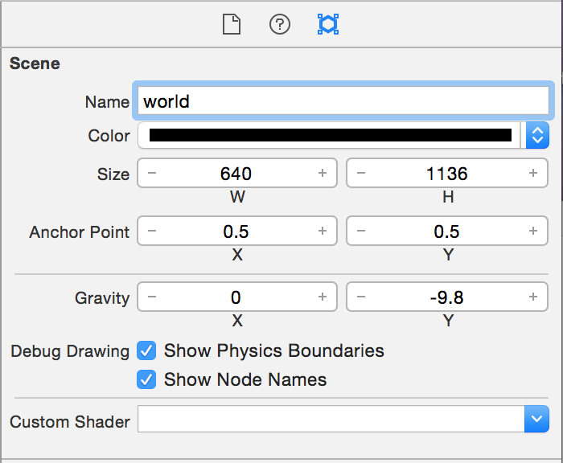
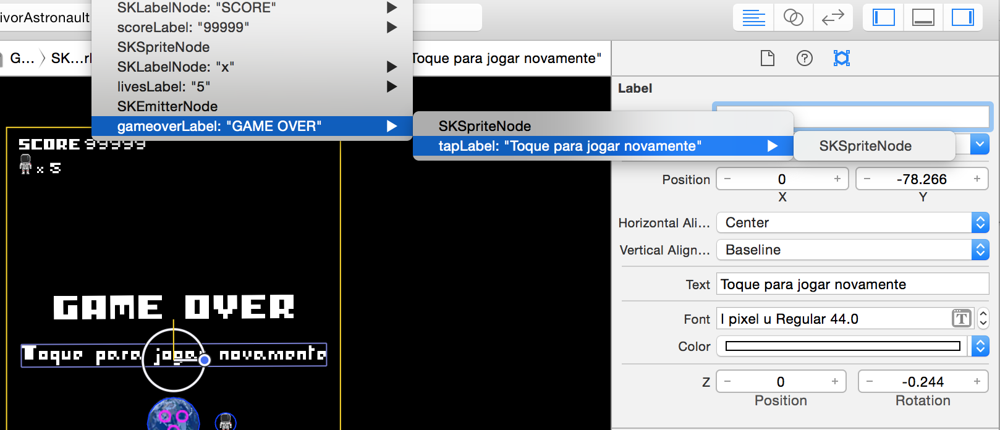

Vamos explorar alguns recursos do framework SpriteKit que é feito para desenvolvimento de jogos 2D no iOS.
Abra o Xcode e no File -> New -> Project escolha iOS Application e o template Game
Escolha o nome do projeto como SurvivorAstronaut, liguagem Swift, techonology Spritekit e Devices iPhone
Vamos fazer um jogo que só funcionará em modo portrait, portando desmarque Landscape Left e Landscape Right no target do projeto.
Será criada uma App com um StoryBoard e um GameViewController. O GameViewController aparentemente é um View Controller comum, com uma diferença sua view principal é do tipo SKView que é o equivalente ao UIView do spritekit
Se executarmos o projeto podemos verificar que no template existe uma implementação com um Label de Hello World, e se clicarmos em qualquer lugar é um efeito aparece no lugar que foi tocado.
Interessante notar a indicação abaixo na tela na qual o Spritekit informa o número de nós que atualmente estão na tela, além disso você tem uma constante visualização do frame rate, que em casos ideais deveria sempre estar em torno de 60 fps (frames for segundo). Importante é que o simulador não apresenta a mesma performance que um dispositivo, portanto se quiser acompanhar corretamente o frame rate você precisará desenvolver usando seu dispositivo iOS.
O SpriteKit trabalha com SKScene para representar as telas do seu jogo, de fato o XCode já criou uma SKScene para você chamada GameScene.swift, além disso temos uma novidade que é uma representação visual da tela no arquivo GameScene.sks que pode ser entendido como se fosse um arquivo de storyboard da sua Scene.
No nosso GameScene.swift vamos apagar o código do Hello World. Seu resultado final deverá ser apenas os métodos vazios abaixo
override func didMove(to view: SKView) {
}
override func update(_ currentTime: TimeInterval) {
}Agora que nos livramos do código do Hello world vamos começar a criar nosso jogo.
Nosso jogo será de um astronauta que está na orbita da terra e de repente se inicia uma chuva de asteróides, que não causam mal algum para o planeta e somem na atmosfera da terra, mas se acertarem nosso pequeno herói podem machucar muito.
Seu objetivo será fugir dos asteróides e sobreviver, usando os controle de swipe horizontal para mover nosso herói.
Já temos criada nossa SKScene chamada GameScene, vamos clicar no GameScene.sks
Primeiro apague a helloLabel.
Vamos alterar as propriedades
Name: world
Size: W 640 H 1136
Anchor Point: 0.5 0.5 
Aqui estamos colocando as dimensões iPhone5s Portrait apenas como referência visual, além disso setamos o anchor point para (0.5,0.5) para colocar a origem (0,0) no centro da tela, isso vai facilitar os cálculos para este jogo.
Uma coisa importante é que na SKScene por padrão a origem (0,0) se encontra no canto inferior esquerdo, similar ao eixo cartesiano (X,Y) com Y crescendo para cima, assim Y aqui é invertido em relação a UIViews no UIKit.
Agora vamos copiar todos os arquivos de recursos que vamos usar no nosso jogo. No Finder abra na pasta Assets fornecida selecione todos os diretórios.
Arraste esses diretórios para dentro do projeto no XCode
Na janela que abre garanta que Copy items if needed esteja selecionado, a opção de Create Groups esteja ligada e o target principal do projeto também esteja selecionado.
Agora no XCode abra o folder Images e vamos migrar os 2 arquivos de imagem para dentro do Images.xcassets, para isso selecione o Images.xcassets e arraste os arquivos de imagem pixelastronault.png e pixelearth.png para dentro dele. Ah e apague o Spaceship que pertencia ao Hello World.
Com isso você pode apagar o folder Images com as duas imagens que estavam dentro dele com Delete -> Move to Trash

Voce incluiu uma fonte I-pixel-u.ttf e agora vamos configurar o Aplicativo para usá-la.
Dentro de Supporting Files -> selecione o arquivo Info.plist
E na "Information Property List" clique o + e adicione o novo valor
"Fonts provided by application"
E adicione o valor I-pixel-u.ttf (o primeiro caracter é a vogal i maíuscula e não a consoante l)
 Ok, esta fonte é 100% free do http://www.dafont.com/i-pixel-u.font vamos instalar a fonte no nosso Mac para visualisar no XCode.
Para isso vá no Finder e selecione o arquivo I-pixel-u.ttf da fonte em Assests->Font
Pressione a barra de espaço para ver o preview do arquivo
Clique no botão superior direito "Open with font Book"
Clique no botão "Install Font"
Ok, esta fonte é 100% free do http://www.dafont.com/i-pixel-u.font vamos instalar a fonte no nosso Mac para visualisar no XCode.
Para isso vá no Finder e selecione o arquivo I-pixel-u.ttf da fonte em Assests->Font
Pressione a barra de espaço para ver o preview do arquivo
Clique no botão superior direito "Open with font Book"
Clique no botão "Install Font"
 Pode ser que o sistema reclame da fonte não oferecer todos os tipos, mas tudo bem, selecione a fonte e clique em "Install Checked".
Pode ser que o sistema reclame da fonte não oferecer todos os tipos, mas tudo bem, selecione a fonte e clique em "Install Checked".
 Ok a fonte já está disponível no Mac e também já está configurada no nosso projeto.
Ok a fonte já está disponível no Mac e também já está configurada no nosso projeto.
Vamos começar e editar nossa GameScene.sks adicionando Sprites.
Clique na nossa GameScene.sks e araste um Color Sprite para o centro dela.

Agora altere as propriedade desse novo sprite, ele será o nosso planeta:
Name: planet
Texture: pixel_earth.png
Size: W 100 H 100
Anchor Point: 0.5 0.5
Position: X 0 Y 0

Se você executar o projeto verá que agora o planeta já está sendo exibido na tela, note que a label de debug abaixo já mostra numero de nodes, bem como o frame rate que se mantém 60 frames por segundo.
Mais abaixo nas propriedades do planeta vamos adicionar um corpo físico para nosso planeta pois vamos usar isso para detectar colisões, porém não queremos que ele seja afetado pela gravidade.
Na sessão Phisics Definition altere as propriedades:
Body type: Bounding Circle
selecione Dynamic
desmarque Allows Rotation e Affected by Gravity
Os demais valores de Category e Collision vamos preencher via código, para ficar mais compreensível.
Bom, agora vamos adicionar nosso herói adicione outro ColorSprite do lado direito do planeta. E altere as propriedades:
Name: astronaut
Parent: planet
Testure: pixel_astronault
Position: X 100 Y 0
Anchor Point: X 0.5 Y 0.5
Na sessão Phisics Definition do nosso astronaut altere as propriedades de maneira similar ao que fizemos para o planet:
Body type: Bounding Circle
selecione Dynamic
desmarque Allows Rotation e Affected by Gravity
Agora vamos adicionar um label no topo da tela
No SpriteKit o label é um SKLabel, vamos alterar o texto e a fonte do nosso label
Text: SCORE
Font: I pixel u (tamanho 32)
Copie e cole este label para criarmos mais um label do lado e altere as propriedades:
Name: scoreLabel
Horizontal Align: Left
Text: 99999
Este label será a contagem de pontos do usuário, agora vamos adicionar as vidas do nosso astronaulta.
Arraste um ColorSprite abaixo do label score
Texture : pixel_astronaut.png

Copie mais uma vez o label SCORE criando um label com texto "x"
Text: x

Por fim, mais uma vez o label SCORE criando um label com texto "5" que será o número de vidas
Name: livesLabel
Text: 5

Se executar você deveria ter um visual semelhante a este abaixo, veja que temos 8 nodes agora.
Nosso astronaulta está sozinho no espaço, mas um fundo inteiro preto não está parecendo muito o espaço de verdade, vamos adicionar umas estrelas para fazer ele mais real.
Jogos geralmente possuem sistemas de partículas ou SKEmitterNodes do spritekit. Sistemas de partículas são muito usados para quando temos elementos que as arestas são difíceis de modelar em um único objeto, por exemplo, fogo, fumaça, etc.
Nós poderíamos simplesmente arrastar um Emitter e configurá-lo, mas vamos usar o editor visual que o Spritekit possui para isso.
No menu do XCode Clique em File -> New -> File... e crie um Spritekit Particle
Escolha o template de Rain

Nomeie o arquivo de StarField.sks
Se você selecionar o arquivo verá um editor visual que já anima o sistema de partículas
Vamos alterar umas propriedades e fazer nosso sistema parecer com estrelas.
Lifetime: Start 1
Position Range: X 1000 Y 1000
Angle: Start 0 Range 0
Speed: Start 0 Range 0
Acceleration: X 0 Y 0
Scale: Start 0.1 Range 0.1 Speed -0.01
Color Ramp: com duas cores ClearColor (0% opacity) e White Color
Pronto agora nosso sistema de partículas parece um fundo de estrelas piscando. Sistemas de partículas são muito poderosos, investigue depois os outros templates.
Clique novamente na nossa GameScene.sks e vamos arrastar o sistema de partículas Starfield.sks para dentro dela alterando a posição para o centro
Position: X 0 Y 0

Perceba que foi criado um Emitter exatamente com os valores que configuramos, embora criar o arquivo StarField.sks não fosse necessário, é interessante usá-lo pois ele apresenta o resultado em tempo real do seu sistema de partículas conforme você edita os valores.
Execute novamente e veja que agora nosso astronauta parece estar mesmo no espaço.
É sempre bom ficar de olho no frame rate quando adicionados sistemas de partículas
Vídeos são muito comuns de serem usados em jogos, vamos imcrementar mais nosso background incluindo um vídeo em loop que vai ficar no fundo.
No arquivo GameScene.swift adicione o import AVFoundation e adicione uma propriedade AVPlayer
import AVFoundation
class GameScene: SKScene {
var bgVideoPlayer: AVPlayer!
Agora criando um init no GameScene vamos inicializar o bgVideoPlayer que vai criar uma instância de um AVPlayer.
required init?(coder aDecoder: NSCoder) {
super.init(coder: aDecoder)
let filePath = Bundle.main.path(forResource: "background", ofType: "mp4")!
let url = URL(fileURLWithPath: filePath)
self.bgVideoPlayer = AVPlayer(url: url)
self.bgVideoPlayer.actionAtItemEnd = .none
NotificationCenter.default.addObserver(self,
selector: #selector(GameScene.bgVideoDidEnd(notification:)),
name: .AVPlayerItemDidPlayToEndTime,
object: self.bgVideoPlayer.currentItem)
//VIDEO BACKGROUND
let videoNode = SKVideoNode(avPlayer: self.bgVideoPlayer)
videoNode.size = self.size
videoNode.zPosition = -1
videoNode.alpha = 0.4
self.addChild(videoNode)
videoNode.play()
}Além de criar a instância da propriedade bgVideoPlayer, nós registramos nossa classe para ser notificada quando o vídeo acabar, porém vemos um warning que o GameScene.bgVideoDidEnd(notification:) não existe ainda, vamos criá-lo
func bgVideoDidEnd(notification: NSNotification) {
let playerItem = notification.object as! AVPlayerItem
playerItem.seek(to: kCMTimeZero)
}o método bgVideoDidEnd será disparado quando o vídeo terminar, neste momento a única coisa que fazemos é voltar para o time zero, possibilitando o player continuar tocando o vídeo do início novamente.
Execute e verifique que agora temos um vídeo em loop tocando no fundo da nossa game scene. Note que o frame rate no simulador caiu bastante, só que se você executar no dispositivo verá que teremos ainda 60fps, assim como dito anteriormente para acompanhar o frame rate real é necessário executar no dispositivo.

Nós já temos labels para apresentar a pontuação e as vidas do nosso herói, agora vamos adicionar propriedades no GameScene.swift para controlar os valores que serão exibidos.
Abaixo da propriedade bgVideoPlayer adicione as propriedades
var score: Int = 0
var lives: Int = 0
var scoreLabel:SKLabelNode!
var livesLabel:SKLabelNode!
var planetNode:SKNode!
var astronautNode:SKNode!Agora no initWithCoder abaixo da linha [videoNode play] adicione a inicialização dos nodes
self.scoreLabel = self.childNode(withName: "scoreLabel") as! SKLabelNode
self.livesLabel = self.childNode(withName: "livesLabel") as! SKLabelNode
self.planetNode = self.childNode(withName: "planet")!
self.astronautNode = self.planetNode.childNode(withName: "astronaut")!
self.setup()Os Nodes não estão sendo instanciados e nem existe outlets, ao invés disso como já existem dentro do nosso GameScene.sks estamos recuperando suas instâncias chamando childNode(withName:).
O método setup ainda não existe, nele vamos inicializar nosso game, vamos criá-lo para inicializar os valores, preencher os labels.
func setup()
{
self.anchorPoint = CGPoint(x:0.5, y:0.5)
self.score = 0
self.scoreLabel.text = String(self.score)
self.lives = 5
self.livesLabel.text = String(self.lives)
}
Executando podemos verificar que os labels já estão sendo alterados para os valores iniciais de início do jogo
Vamos criar um método para nosso astronauta sofrer dano quando ele for atingido.
func damageAstronaut()
{
self.lives -= 1
self.livesLabel.text = String(self.lives)
if self.lives == 0
{
// Game Over
} else {
// Animate damage
}
}Por enquando não tratamos o game over nem a animação de dano, faremos isso mais adiante. Agora também vamos criar um método para quando o astronaulta marcar mais pontos.
func addScore()
{
self.score += 1
self.scoreLabel.text = String(self.score)
}
Por enquanto, a vida desse astronaulta está muito tranquila, vamos adicionar nossos inimigos para adicionar mais emoção no jogo.
Nosso inimigo será um cinturão de asteróides que será atraído pela gravidade da terra. Nosso platena está a salvo pois os asteróides desintegram na atmosfera, mas nosso herói precisará de toda sua habilidade para se esquivar deles.
Nosso inimigo será um SKShapeNode, e para manter o código que o manipula isolado do GameScene vamos criar uma nova classe que extende o SKShapeNode.
Vá em File -> New -> File ...
No iOS -> Source -> Cocoa Touch Class

Crie uma classe que extende SKShapeNode em Swift chamada AsteroidsBeltNode

No arquivo AsteroidsBeltNode.swift adicione o import SpriteKit
import SpriteKitAgora vamos criar algumas propriedades
class AsteroidsBeltNode: SKShapeNode {
var rotation:CGAffineTransform
var holeAngle:CGFloat
var currentRadius:CGFloatNosso cinturão de asteróides será um arco com uma abertura semelhante ao desenho da letra "C" para isso vamos definir o ângulo da abertura e o raio do arco, além disso vamos rotacionar a abertura para cada vez ela aparecer em um lugar diferente.
No AsteroidsBeltNode.m vamos implementar o init(radius:CGFloat, holeAngle:CGFloat)
init(radius:CGFloat, holeAngle:CGFloat){
self.currentRadius = radius
self.holeAngle = holeAngle
self.rotation = CGAffineTransform(rotationAngle: CGFloat(arc4random()))
super.init()
let path = UIBezierPath(arcCenter: CGPoint.zero, radius: radius, startAngle: 0, endAngle: 2 * .pi, clockwise: true)
path.apply(self.rotation)
self.path = path.cgPath
self.fillColor = SKColor.clear
self.strokeColor = SKColor(red: 143/255, green: 1, blue: 1, alpha: 1)
let shader = SKShader(fileNamed: "enemyShader.fsh")
self.strokeShader = shader
self.isAntialiased = false
self.lineWidth = 10
}
required init?(coder aDecoder: NSCoder) {
fatalError("init(coder:) has not been implemented")
}
Um SKShapeNode pode ser facilmente criado a partir de um UIBezierPath para isso apenas criamos um Arco como path. Depois definimos um ângulo aleatório para rotacionar esse arco. A novidade aqui é que para a cor estamos usando um shader, enemyShader.fsh. Shaders são implementações do OpenGL ES (Embeded Systems) que rodam direto na GPU, e usam uma liguagem própria Shader Language, que é parecida com linguagem C. Aqui não vamos abordar a linguagem SDL dos Shaders mas saiba que eles são um recurso muito poderoso para texturas dinâmicas por exemplo.
Agora nosso inimigo precisa simular que está sendo atraído gravitacionalmente para a tela, com isso vamos implementar seu método update que será responsável por ir decrementando o raio ao longo do tempo
func update(){
self.currentRadius *= 0.99
let newPath = UIBezierPath(arcCenter: CGPoint.zero, radius: self.currentRadius, startAngle: 0, endAngle: 2 * .pi - self.holeAngle, clockwise: true)
newPath.apply(self.rotation)
self.path = newPath.cgPath
}
No update reduzimos o raio para 99% do raio anterior e criamos um novo UIBezierPath com o novo raio atribuindo este novo path ao SKShapeNode
Já temos nossa classe que representa o inimigo, agora vamos cuidar de colocar inimigos na nossa game scene.
No nosso GameScene.swift abaixo da propriedade astronautNode vamos criar um Array para conter todos os inimigos
var enemies = [AsteroidsBeltNode]()
Agora precisamos adicionar uma lógica para adicionar os inimigos na tela, faremos isso com o uso de NSTimer.
No GameScene.swift fim do init?(coder aDecoder: NSCoder) depois da linha self.setup() adicione o Timer
Timer.scheduledTimer(timeInterval: 2.0, target: self, selector: #selector(GameScene.addEnemy(timer:)), userInfo: nil, repeats: true)
Agora vamos criar o método addEnemy que está faltando
func addEnemy(timer: Timer)
{
let enemy = AsteroidsBeltNode(radius: self.size.width, holeAngle: .pi / 2 )
self.enemies.append(enemy)
self.addChild(enemy)
}
Agora os inimigos já estão sendo adicionados porém precisamos para cada um chamar o método update de cada inimigo para eles simularem a atração gravitacional.
Para toda Game Scene o Spritekit chama o método override func update(_ currentTime: TimeInterval) uma vez para cada frame, vamos aproveitar esse método para chamar os métodos update de todos os objetos dos inimigos
override func update(_ currentTime: TimeInterval) {
self.enemies.forEach { (enemy) in
enemy.update()
}
} Se executarmos agora podemos ver nossos asteroides aparecendo.

O problema agora é que se os inimigos atingirem nosso herói nada acontece, na próxima sessão vamos resolver esse problema.
É muito comum em jogos a necessidade de detectar quando dois objetos colidem ou entram em contato.
Para nosso jogo precisamos detectar quando os inimigos colidem com o herói para aplicar o dano no herói e quando os inimigos colidem com o planeta para contabilizar um ponto para o nosso game.
No SpriteKit a colisão é aplicável com a física, sendo que pode também se detectar o contato, por exemplo quando dois objetos entram em contato, ou se sobrepõem ou por fim perdem o contato entre si.
Basicamente o que vamos definir são mascaras de bits como se fossem uma categoria, no nosso caso 1 bit para o planeta, 1 bit para o astronauta e 1 bit para os inimigos.
No arquivo GameScene.swift vamos incluir o protocolo de SKPhysicsContactDelegate
class GameScene: SKScene, SKPhysicsContactDelegate E logo acima do arquivo GameScene abaixo dos import vamos criar uma struct 3 categorias que vamos usar no nosso jogo.
struct PhysicsCategory {
static let none: UInt32 = 0 // 0
static let astronaut: UInt32 = 0b1 // 1
static let enemy: UInt32 = 0b10 // 2
static let planet: UInt32 = 0b100 // 4
}Agora vamos programar as categorias de cada objeto dentro do init?(coder aDecoder: NSCoder) abaixo da linha
self.planetNode = self.childNode(withName: "planet")! self.astronautNode = self.planetNode.childNode(withName: "astronaut")!
vamos incluir as categorias
if let planetBody = self.planetNode.physicsBody
{
planetBody.categoryBitMask = PhysicsCategory.planet
planetBody.contactTestBitMask = PhysicsCategory.enemy
planetBody.collisionBitMask = PhysicsCategory.none
}
if let astronautBody = self.astronautNode.physicsBody
{
astronautBody.categoryBitMask = PhysicsCategory.astronaut
astronautBody.contactTestBitMask = PhysicsCategory.enemy
astronautBody.collisionBitMask = PhysicsCategory.none
}
self.physicsWorld.contactDelegate = self
Aqui nós estamos configuranto que o planeta é da categoria planetCategory e vamos testar seu contato com um enemyCategory, o collision é colocado em zero (PhysicsCategory.none) propositalmente pois não queremos simular a fisica dos objetos colidindo.
Já o astronauta também está configurado para entrar em contato com o inimigo.
Vamos agora configurar o Inimigo, vá até o método addEnemy e abaixo da variável enemy
let enemy = AsteroidsBeltNode(radius: self.size.width, holeAngle: .pi / 2 )
adicione o código
enemy.physicsBody = SKPhysicsBody(edgeChainFrom: enemy.path!)
enemy.physicsBody?.categoryBitMask = PhysicsCategory.enemy
enemy.physicsBody?.contactTestBitMask = PhysicsCategory.astronaut | PhysicsCategory.planet
enemy.physicsBody?.collisionBitMask = PhysicsCategory.none
Aqui estamos falando que nosso inimigo pode entrar em contato tanto com astronauta quanto com o planeta.
Agora precisamos de uma atualização no AsteroidsBeltNode.swift dentro do método update() adicione no fim do método apos a linha self.path = newPath.cgPath
// Cria um novo corpo de física mantendo os valores do antigo
// mas usando o novo CGPath
if let physicsBody = self.physicsBody
{
let categoryBitMask = physicsBody.categoryBitMask
let contactTestBitMask = physicsBody.contactTestBitMask
self.physicsBody = SKPhysicsBody(edgeChainFrom: newPath.cgPath)
self.physicsBody?.categoryBitMask = categoryBitMask
self.physicsBody?.contactTestBitMask = contactTestBitMask
self.physicsBody?.collisionBitMask = 0
}Aqui estamos pegando os valores antigos de contato e criando um novo SKPhysicsBody agora para o newPath e preenchendo novamente os valores desse corpo fisico.
Toda vez que os SKNodes entrarem em contato o método didBegin(_ contact: SKPhysicsContact) é disparado e é nele que vamos verificar o contato e disparar os métodos que queremos.
func didBegin(_ contact: SKPhysicsContact) {
let collision = contact.bodyA.categoryBitMask | contact.bodyB.categoryBitMask
let enemy:AsteroidsBeltNode?
if contact.bodyA.categoryBitMask == PhysicsCategory.enemy
{
enemy = contact.bodyA.node as? AsteroidsBeltNode
} else {
enemy = contact.bodyB.node as? AsteroidsBeltNode
}
if enemy?.parent != nil
{
if collision == PhysicsCategory.astronaut | PhysicsCategory.enemy
{
// Inimigo atingiu o astronaulta
self.damageAstronaut()
} else if collision == PhysicsCategory.planet | PhysicsCategory.enemy
{
// Inimigo atingiu o planeta
self.addScore()
}
// remove o inimigo se sempre que entrarem em contato com qualquer coisa
if let index = self.enemies.index(of: enemy!) {
self.enemies.remove(at: index)
}
enemy?.removeFromParent()
}
}
Pronto, se você executar o jogo verá que agora se um inimigo colidir com o astronauta ele tira uma vida ou se o inimigo colidir com o planeta ele aumenta um ponto.

Porém para ver isso estamos contando com a sorte, pois nosso astronauta ainda está sem chance de se defender. Vamos cuidar disso na próxima sessão.
Vamos dar ao nosso herói uma chance para se esquivar, vamos usar o movimento de swipe no X para mover o astronauta.
No GameScene.swift adicione as propriedades
var astronautAngle:CGFloat = 0
var astronautOrbitRadius:CGFloat = 0
var astronautSpeed:CGPoint = CGPoint.zeroNo fim do metodo setup vamos inicializar os valores
self.astronautAngle = 0;
self.astronautOrbitRadius = self.planetNode.frame.size.width/2 + self.astronautNode.frame.size.width/2 + 50Agora no método da GameScene chamado didMove(to view: SKView) (equivalente do viewDidAppear) nele vamos adicionar um Pan Gesture
override func didMove(to view: SKView) {
let panGesture = UIPanGestureRecognizer(target: self,
action: #selector(GameScene.handlePanGesture(panGestureRecognizer:)))
view.addGestureRecognizer(panGesture)
}
Agora vamos criar o método que está faltando handlePanGesture aqui a única coisa é atualizar a velocidade do astronauta.
func handlePanGesture(panGestureRecognizer:UIPanGestureRecognizer)
{
self.astronautSpeed = panGestureRecognizer.velocity(in: self.view)
}Agora vamos posicionar nosso astronauta no fim do método update adicione
self.astronautSpeed = CGPoint(x: self.astronautSpeed.x / 1.1,
y: self.astronautSpeed.y)
self.astronautAngle += self.astronautSpeed.x / 2000
let astronautX = self.astronautOrbitRadius * cos(self.astronautAngle)
let astronautY = self.astronautOrbitRadius * sin(self.astronautAngle)
self.astronautNode.position = CGPoint(x:astronautX,
y:astronautY)Aqui estamos incluindo um fator de desaceleração de 1.1 e um valor de 2000 para traduzir um fator do gesto para a velocidade. Estamos ignorando o Pan em Y e posicionando o astronauta em torno do planeta para ele parecer em órbita.
Execute o projeto e veja que agora você consegue mover o astronauta fazendo um gestos tanto na Horizontal quanto na Vertical.
SpriteKit tem um recurso muito poderoso que são SKActions, elas podem ser usadas para aplicar efeitos, mover, escalar, etc.. qualquer SKNode.
Vamos usar actions para animar o dano no astronauta e o label de score.
No GameScene.swift adicione suas propriedades
var damageAction:SKAction!
var scoreAction:SKAction!No método init?(coder aDecoder: NSCoder) adicionar após o self.physicsWorld.contactDelegate = self uma SKAction para pintar o astronauta de vermelho quando ele sofrer dano
self.damageAction = SKAction.sequence([
SKAction.colorize(with: SKColor.red, colorBlendFactor: 1.0, duration: 0.0),
SKAction.colorize(withColorBlendFactor: 0.0, duration: 1.0)
])A SKAction sequence é uma Action que executa sequencialmente todas as SKAction que ela possui, estamos aplicando uma colorize de vermelho com duration de 0.0, isso quer dizer, imediatamente. Depois uma action que volta a cor original que dura 1.0 segundo.
Agora vamos para a animação da label de Score, adicione
self.scoreAction = SKAction.group([
SKAction.sequence([
SKAction.scale(to: 2.0, duration: 0.2),
SKAction.scale(to: 1.0, duration: 0.2)
]),
SKAction.sequence([
SKAction.run
{
self.scoreLabel.color = SKColor.orange
self.scoreLabel.colorBlendFactor = 1.0
},
SKAction.wait(forDuration: 0.2),
SKAction.run
{
self.scoreLabel.colorBlendFactor = 0
}
]),
])
Aqui vemos uma SKAction group que é um grupo que executa todas as SKActions paralelamente, veja que SKAction de group ou sequence podem ser aninhadas. Outro detalhe é a SKAction de run {} que executa um bloco de código no qual pode-se alterar quaisquer objetos.
SKAction wait(forDuration:) faz uma pausa entre as SKActions que está executando na sequence.
Criadas as actions basta adicionar o código para chamá-las.
No método damageAstronaut abaixo do comentário // Animate damage adicione a execução da action de damage
// Animate damage
self.astronautNode.run(self.damageAction)No fim do método addScore vamos chamar executar a action de animação do score
self.scoreLabel.run(self.scoreAction)Execute e veja que agora temos animações do astronauta e da label de score
Os efeitos sonoros são uma parte importante dos jogos, vamos adicionar uma música de fundo e uns efeitos sonoros para deixar nosso jogo mais empolgante.
No arquivo GameScene.swift adicione uma propriedade de um AVAudioPlayer
var bgMusicPlayer: AVAudioPlayer!Vamos iniciar com uma música de background, adicione o método abaixo
func playBackgroundMusic()
{
if self.bgMusicPlayer == nil {
let musicPath = Bundle.main.path(forResource: "backgroundmusic", ofType: "mp4")
let musicUrl = URL(fileURLWithPath: musicPath!)
self.bgMusicPlayer = try! AVAudioPlayer(contentsOf: musicUrl)
self.bgMusicPlayer.numberOfLoops = -1 // tocar para sempre
self.bgMusicPlayer.prepareToPlay()
}
self.bgMusicPlayer.pause()
self.bgMusicPlayer.currentTime = 0
self.bgMusicPlayer.play()
}Aqui criamos uma instância do AVAudioPlayer. Depois pausamos a musica (caso estivesse tocando de um game antes) para colocarmos a musica no começo currentTime = 0 e por fim iniciamos com play.
Agora no fim do método setup adicione a chamada para playBackgroundMusic
self.playBackgroundMusic()Execute e veja que agora temos uma música de fundo tocando dando muito mais emoção para o jogo.
Agora vamos adicionar efeitos sonoros quando o usuário sofrer dano e quando ganhar ponto. Para isso vamos aproveitar de uma SKAction playSoundFileNamed e alterar as duas actions que já temos para isso.
No método init?(coder aDecoder: NSCoder) localize a self.damageAction e altere para
self.damageAction = SKAction.sequence([
SKAction.playSoundFileNamed("hit.wav", waitForCompletion: false),
SKAction.colorize(with: SKColor.red, colorBlendFactor: 1.0, duration: 0.0),
SKAction.colorize(withColorBlendFactor: 0.0, duration: 1.0)
])Perceba que só foi adicionado SKAction.playSoundFileNamed("hit.wav", waitForCompletion: false) no inicio da seguence
Da mesma forma vamos alterar também a self.scoreAction adicionando SKAction.playSoundFileNamed("score.wav", waitForCompletion: false) como primeiro elemento do group.
self.scoreAction = SKAction.group([
SKAction.playSoundFileNamed("score.wav", waitForCompletion: false),
SKAction.sequence([
SKAction.scale(to: 2.0, duration: 0.2),
SKAction.scale(to: 1.0, duration: 0.2)
]),
SKAction.sequence([
SKAction.run
{
self.scoreLabel.color = SKColor.orange
self.scoreLabel.colorBlendFactor = 1.0
},
SKAction.wait(forDuration: 0.2),
SKAction.run
{
self.scoreLabel.colorBlendFactor = 0
}
]),
])Pronto, execute e verifique que agora temos efeitos sonoros tocando quando se toma dano e quando se ganha pontos.
Se não estiver ouvindo no seu dispositivo verifique se o volume não esta no mudo ou se a chave de silencioso não está ligada
Para terminar vamos apenas incluir um tratamento de Game Over para poder reiniciar o jogo quando perdermos todas as vidas.
Clique no GameScene.sks e faça uma cópia da label SCORE com Command+C e Command+V.
E da nova label altere
Name: gameoverLabel
Text: GAME OVER
Font: tamanho 72
Posisiton: X 0 Y 200
Agora mais uma cópia da label SCORE alterando
Name: tapLabel
Parent: gameoverLabel
Text: Toque para jogar novamente
Font: tamanho 44
Posisiton: X 0 Y -80
Note que a segunda label tapLabel foi colocada como filha da gameoverLabel para quando controlarmos a visibilidade da game over label a tap label ter o mesmo comportamento.
Caso você não consiga mais selecionar a tapLabel com o clique você pode acessá-la pelo menu de hierarquia.

Ok agora no GameScene.swift vamos incluir uma propriedade
var gameoverLabel:SKLabelNode!No no método init?(coder aDecoder: NSCoder) antes da linha self.setup() vamos adicionar
self.gameoverLabel = self.childNode(withName: "gameoverLabel") as! SKLabelNode
self.gameoverLabel.isHidden = trueAqui pegamos a label de gameover e inicializamos ela como hidden
Agora no método damageAstronaut adicione o trecho abaixo do comentário // Game Over
// Game Over
self.gameoverLabel.isHidden = false
self.scene?.view?.isPaused = true
// Tap to replay
self.scene?.view?.addGestureRecognizer(
UITapGestureRecognizer(target: self,
action:#selector(GameScene.handleTapGesture(tapGestureRecognizer:)) ))
self.bgMusicPlayer.pause()
No Game Over nós fazemos a label aparecer, pausamos nossa scene (parando todas as actions e a physics, adicionamos um UITapGestureRecognizer e pausamos a música de background.
Agora só falta adicionar o metodo handleTapGesture que reinicia o estado do jogo e dispara o jogo novamente chamando o setup
func handleTapGesture(tapGestureRecognizer:UITapGestureRecognizer)
{
// Restart de Game
self.scene?.view?.removeGestureRecognizer(tapGestureRecognizer)
self.scene?.view?.isPaused = false
self.gameoverLabel.isHidden = true
self.enemies.forEach { (enemy) in
enemy.removeFromParent()
}
self.enemies.removeAll()
self.setup()
}
Como exercício da semana
Desafios:
Adicione um sistema de partículas no astronauta para parecer que ele está com um jetpack soltando ar, fogo ou plasma a sua escolha
Forneça para o jogador a informação que ele precisa fazer swipe horizontal para controlar o astronauta no início do jogo. (Caso prefira pode ser um tutorial)
Faça o jogo ir aumentando a dificuldade conforme o score aumenta
Desafios Adicionais:
Desafio Ouro:
Desafio Insano: